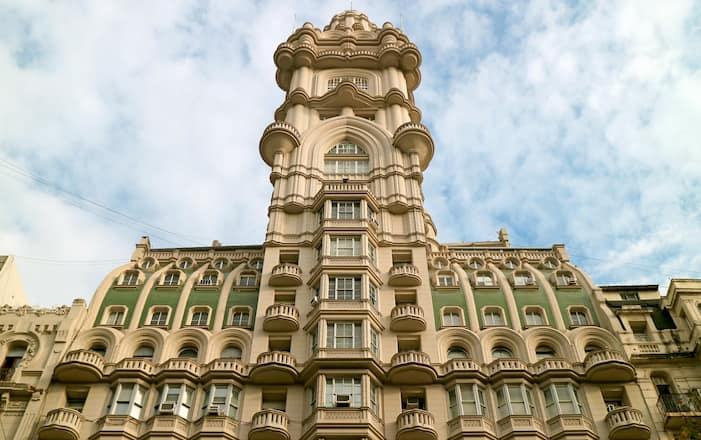

"Las tardecitas de Buenos Aires tienen ese qué sé yo, ¿viste?"
Piazzolla y Goyeneche, Balada para un loco

ALMAGRO
Almagro es uno de los barrios más tradicionales de la ciudad, relacionado con el tango y los típicos cafés porteños. De hecho, fue el primer escenario que escucho a Carlos Gardel. En sus orígenes, fue un terreno llano y fértil con mucha circulación donde corrió uno de los primeros caminos de Buenos Aires. Cobró vida con la llegada del Ferrocarril del Oeste, en 1857 y con la construcción de la Estación Almagro, que funcionó hasta finales de la década de 1880. En esta zona también funcionaron los antiguos tranvías que recorrian parte de la ciudad a finales del siglo XIX y principios del siglo XX.